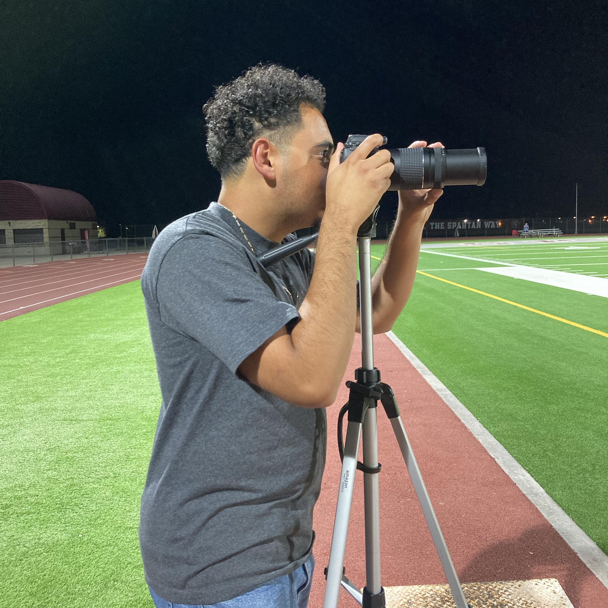

ABOUT ME

My name is Lorenzo Metzgar, & I am a videographer and editor from Las Vegas. Nevada. I provide high quality video for sports games shot, along with professional grade edits. With clients in real estate, soccer, boxing, & more, I can work in multiple environments & give you tailored service in accordance to your goals.
My mission is to provide quality video for athletes and promote them to colleges/professional teams. Some of my partnerships include the Southern Nevada Officials Association(SNOA) & the Southwest Premier League(SWPL). I have done projects in Nevada, Arizona, Utah, & Colorado.
High quality video shot in HD, with a Canon EOS Rebel T7. Films are edited with Premiere Pro.